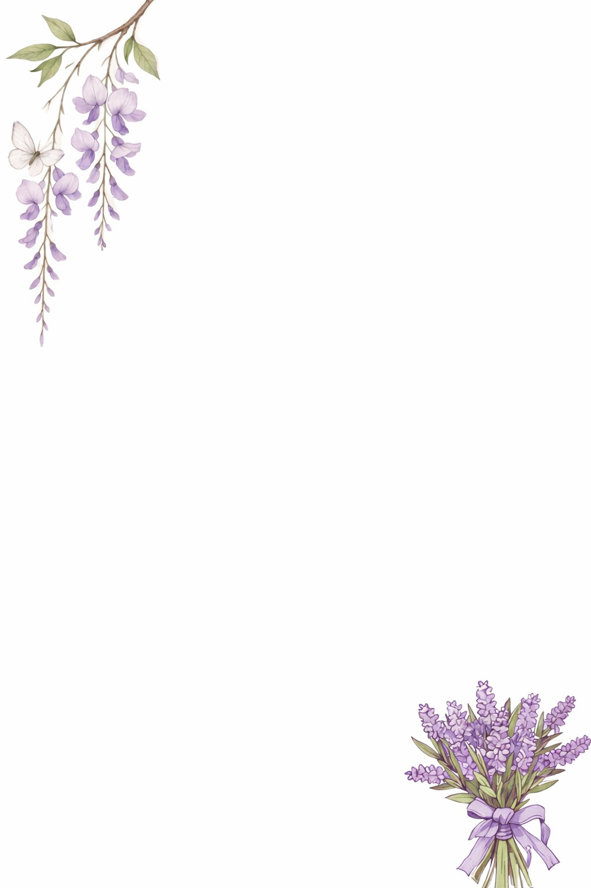
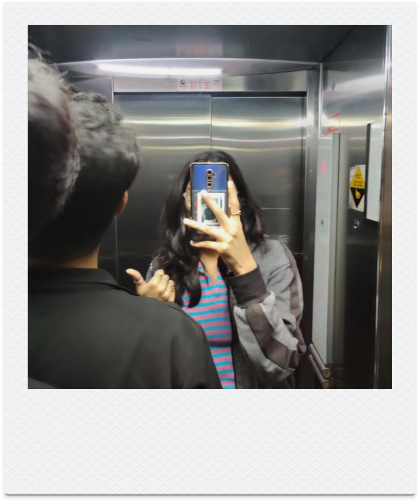
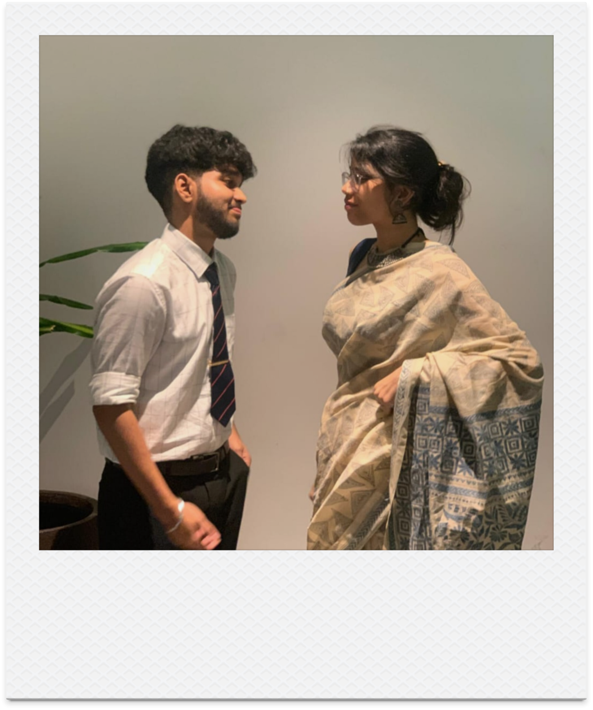
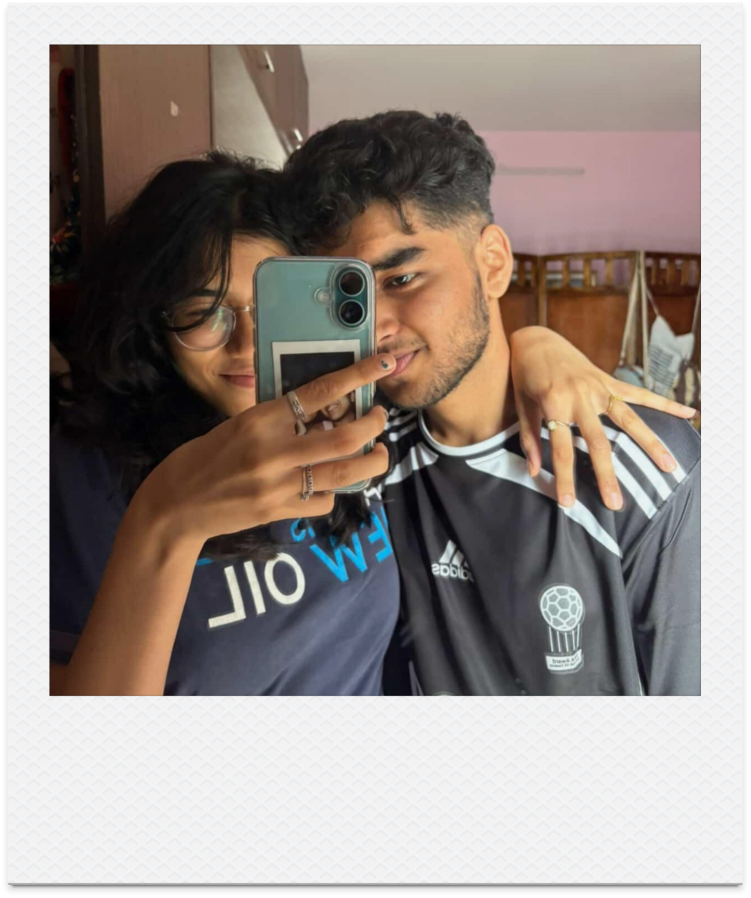
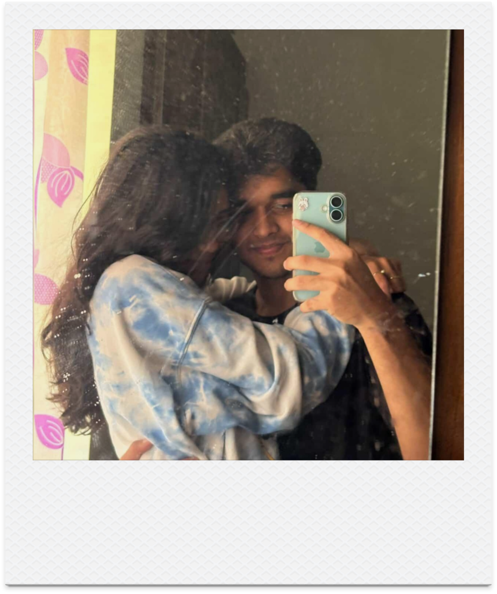
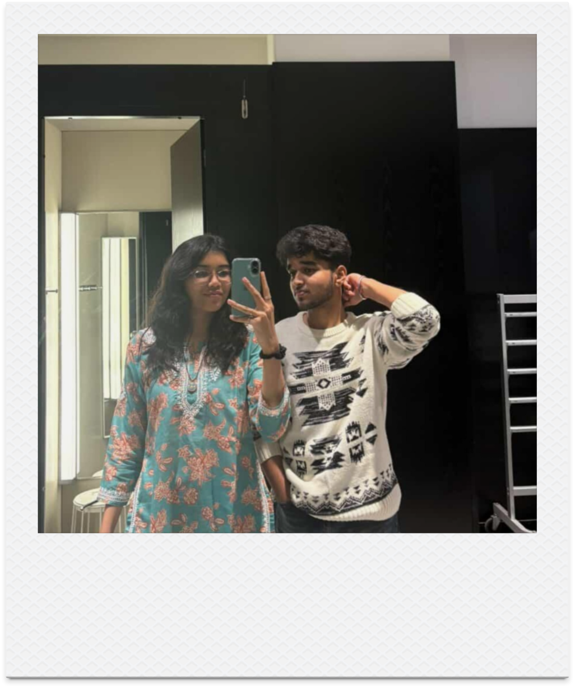
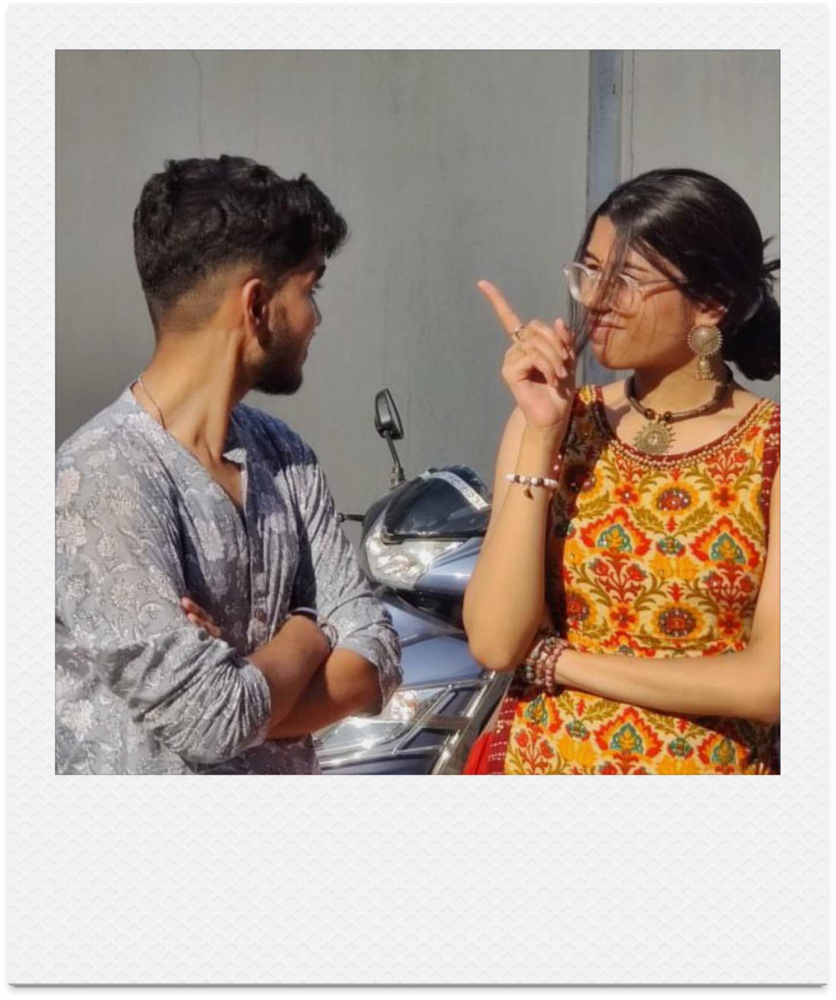

MAHI NAIR, I know we havent celebrated all this valentine and all but , I just wanna let you know how deeply you’ve changed my life in these past 2 to 3 years It honestly feels like I’ve known you for so much longer because you’ve become such an important part of my world. Before you, I didn’t fully understand what it meant to truly care for someone the way I care for you.
You’ve helped me grow into someone more responsible and more mature without ever forcing me to change , you simply inspired me to be better and be the best version of myself. The way you believe in me, the way you talk to me, the way you handle things with such patience and understanding has shaped me in ways I never expected. You turned me into a more loving and loyal man just by loving me the way you do.
I know im a pain in the ass sometimes and might be a lil kiddish and cranky but its i dont know how to tell it to you , i absolutely love the living shit outta you man , i cant imagine a life without you mahi, you are the best i could ever ask for.
Emotionally, you’ve given me a safe place. I open up to you without any fear, and that has made me honestly way stronger. Mentally, you’ve helped me think clearer, focus better, and chase my goals with confidence because I know I have you by my side. Even physically, you’ve had such a positive impact on me ,whether it’s encouraging me to take care of myself, rest properly, eat better, or push myself to improve , you’ve made me want to be the best version of myself in every way.
You mean more to me than I can ever fully put into words. You’re not just my girlfriend you’re my peace, my motivation, my comfort, and my happiness all in one. Every day with you feels like a blessing, and every conversation with you makes my day brighter. I love you in a way that feels calm, strong, and certain. I love everything about you.
I truly wish for us to stay together for a long, long time. I want to grow with you, build with you, and create a future filled with love, trust, and endless support. No matter what life brings, I want to face it with you by my side. Happy Valentine’s Day, my love. You’ve changed my life in the most beautiful way, and I’m so grateful that it’s you.
I guess I LOVE YOU MAHI NAIR, who am i kidding , I FUCKING LOVE YOU MAN, thanks for being who you turly are and one last thing mahi even tho its been like almost 3 years i've never asked you this ,dont ask me why but yeah, WILL YOU BE MY VALENTINE MAHI NAIR?